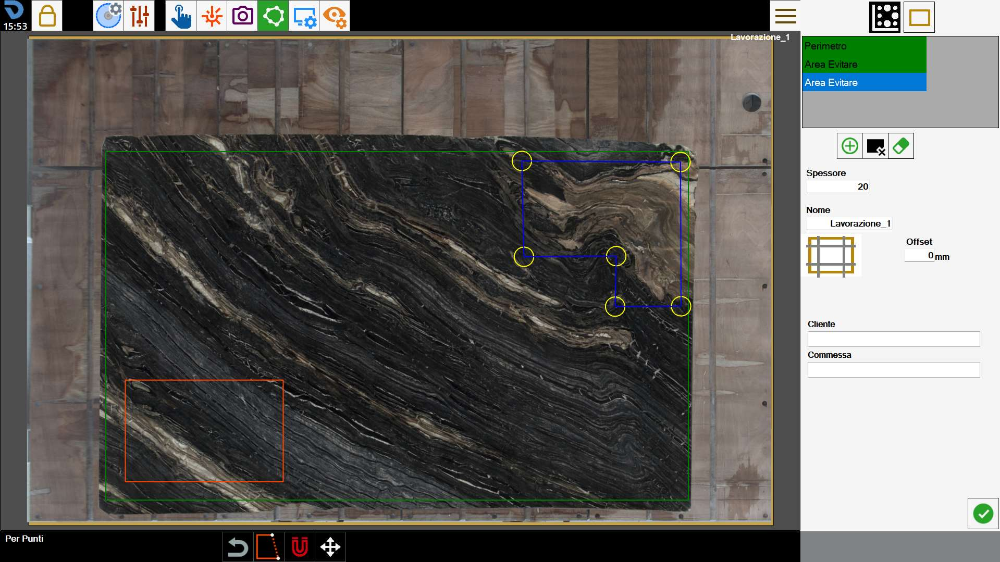
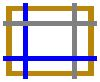

For the program to operate, it must know the edge of the slab to be machined. This function allows the perimeter to be traced.

Perimeter creation mode
The program allows the operator to draw the perimeter using one of the following modes:
 | Rectangle mode |
 | Point mode |
It is possible to switch from one mode to the other at any time while creating the perimeter.
When switching from “point” mode to “rectangle” mode, the perimeter is converted into a rectangle and all polygon vertices are lost.
Confirmation is requested before proceeding with this operation.
Rectangle
This mode allows rectangular perimeters to be created.
To change the size and position of the rectangle, drag the yellow circles in the work area or edit the values shown in the bar below.

Measures | Perimeter dimensions along the X axis and Y axis. |
Location | Coordinates of the bottom-left vertex of the rectangle relative to the bottom-left vertex of the workbench. |
For points
This mode allows polygons of any polygonal shape to be created.
To do this, the operator can place the points forming the perimeter in the desired positions as shown in the figure below.

In this mode, the perimeter can be edited using the following buttons:
 | Close perimeter |
Remove last point |
Once closed, the perimeter turns blue and its vertices are indicated by yellow circles.
Both while creating the perimeter and when a closed perimeter is present, the vertices can always be moved in the work area to improve accuracy.
Bottom bar
The operator can interact with a perimeter in the work area using the buttons in the lower section of the screen.
 | Snap to cross laser |
 | Move perimeter |
Create a new perimeter
The program allows more than one perimeter to be created for positioning the pieces to be machined.
It is also possible to define areas of the slab in which no piece can be inserted.
 | Perimeter |
 | Avoid Area |
 | Delete perimeter |
Created perimeters are visible in the list at the top right. To edit a perimeter, select it in the work area or select the corresponding item in the list.
The currently selected perimeter has blue outlines and yellow vertices, while the remaining perimeters can also be distinguished by colour: green for slab perimeters, orange for avoid areas.

Stress-relief cuts can be added to the slab from this screen.
 | Slab trimming |
To complete perimeter creation, the operator is asked to enter some information about the working to be performed.
Thickness | The operator must specify the thickness of the slab on the workbench. |
Name | Name to assign to the slab working. |
Customer | Specifies the name of the customer for whom the job is being carried out. This field is optional. |
Job | Specifies an identifier for the job. This field is optional. |
Slab thickness and working name are mandatory fields that must be entered before confirming the perimeter.
The additional property information below does not have to be completed.
Avoid areas
Avoid areas are zones of the slab that the operator does not want to make available for positioning pieces on the slab.
Reasons may include breaks in the material, unattractive veins, or the need to preserve certain parts of the slab.
They are represented as blue zones within the work area.

When the Nesting function is used, the pieces are arranged so that none of these areas is occupied.